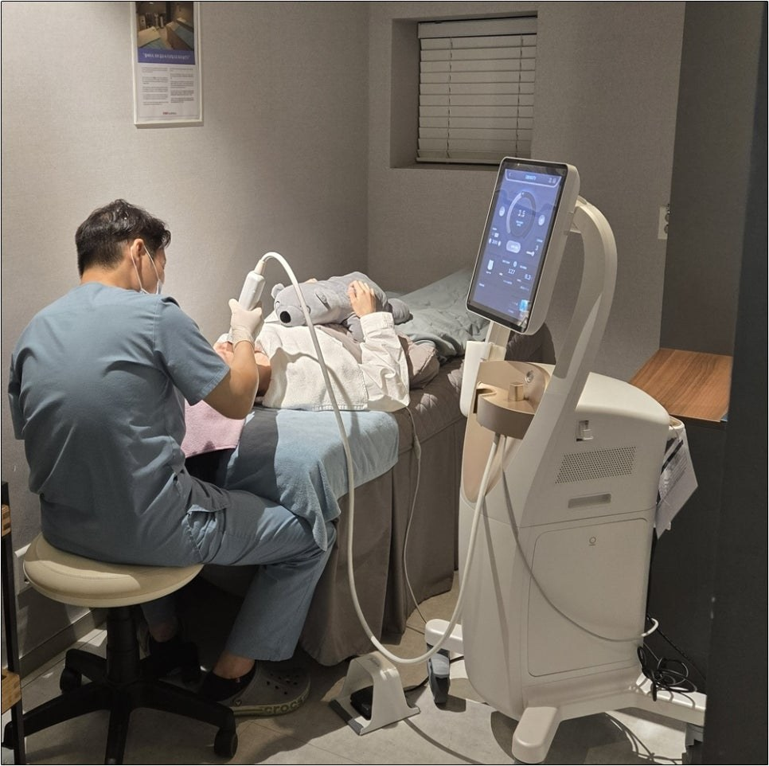
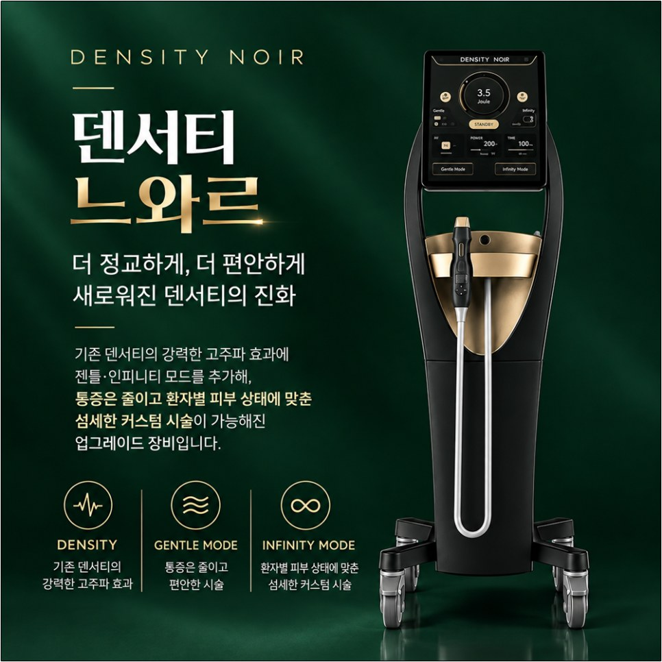
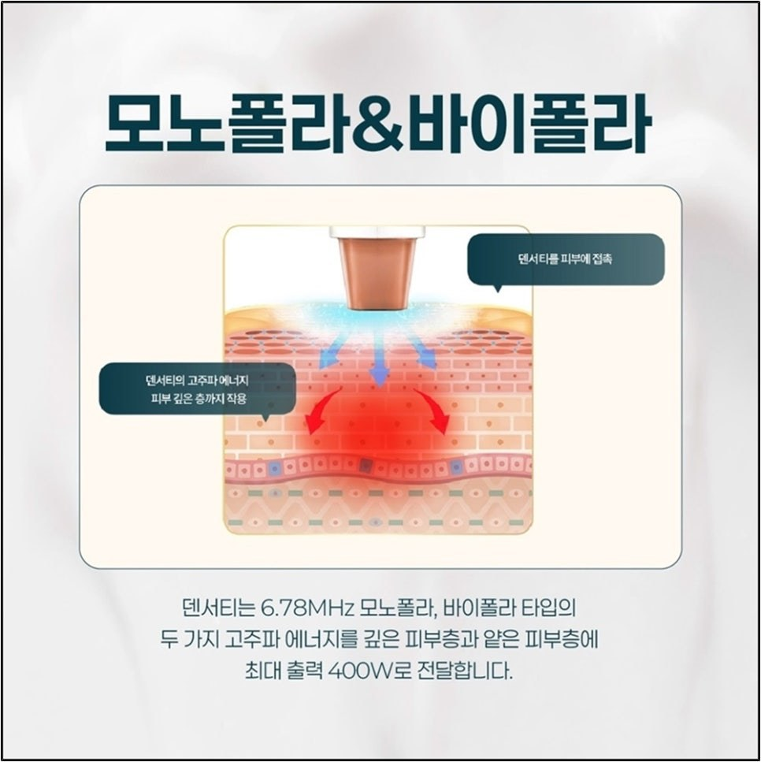
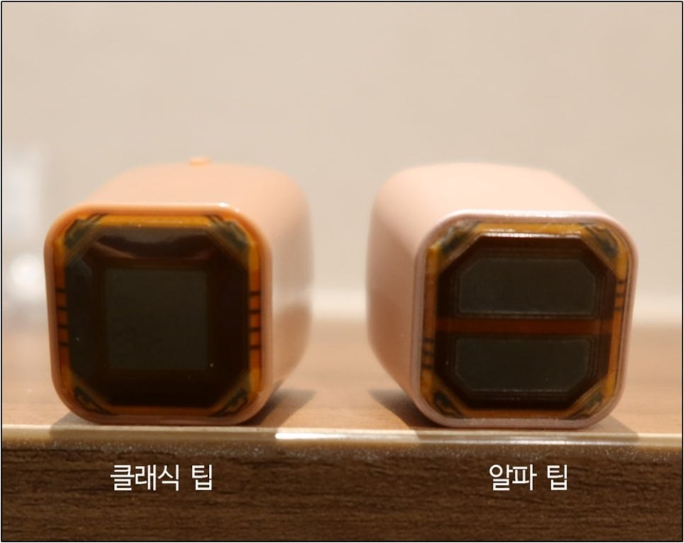
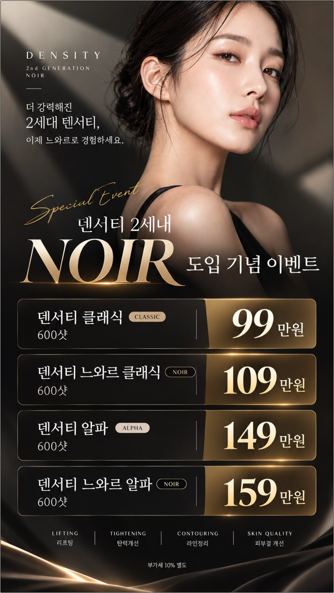
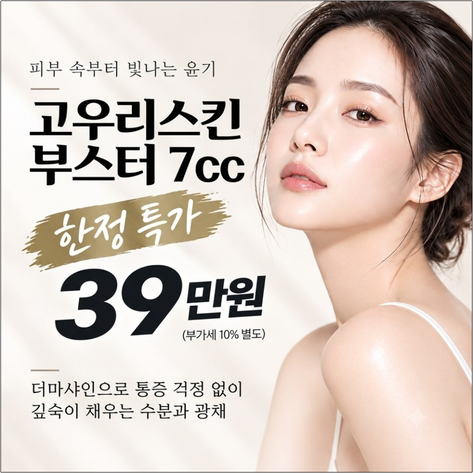
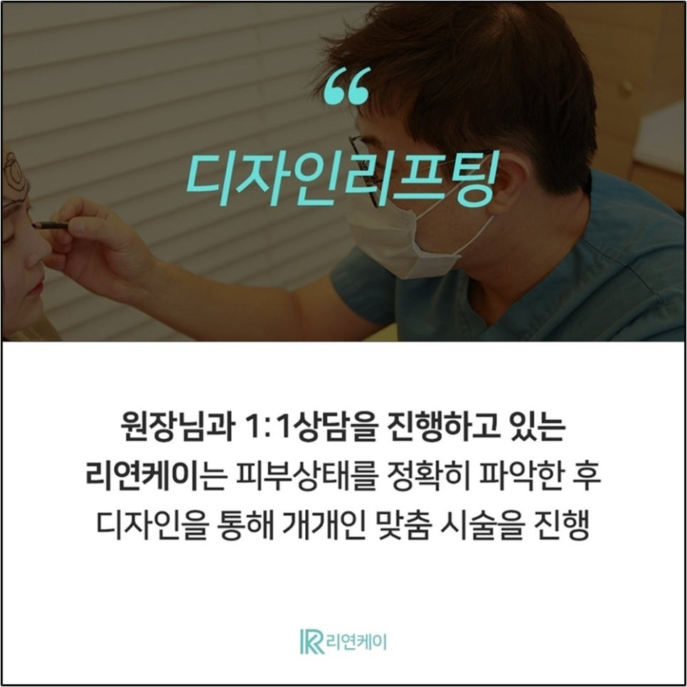
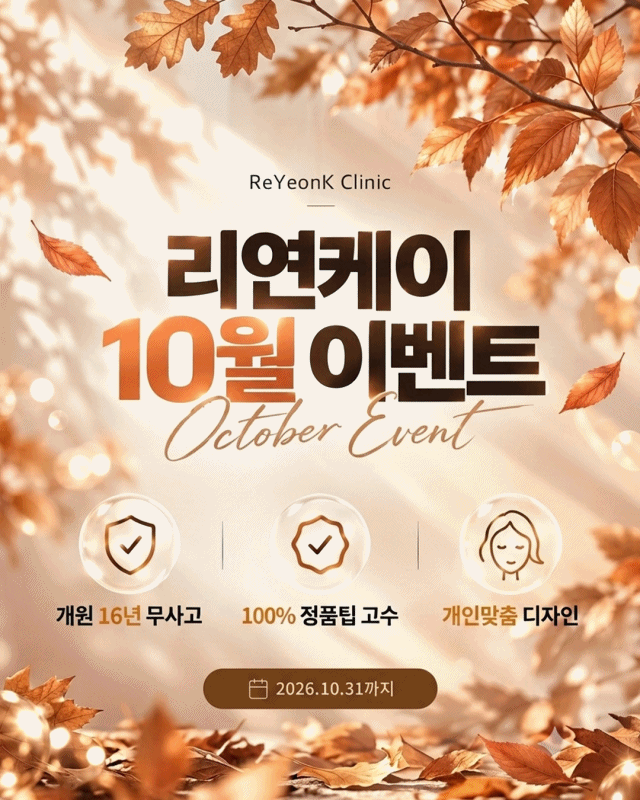

누구나 나이가 들면 피부 처짐과 탄력 저하를 경험합니다.
이런 변화를 조금이라도 늦추고 싶은 것은 모두의 바람일 거예요. 피부 관리숍, 기능성 화장품, 가정용 디바이스도 도움이 되지만 근본적인 해결책이 되기는 어렵습니다.

노화의 원인은 진피층 안에 있습니다. 진피층의 콜라겐 수와 밀도가 점차 줄어들면서 피부가 중력을 이기지 못하고 무너져 내려, 피부 처짐과 주름이 생기기 때문이죠.
그래서 진피층에 직접 작용하는 리프팅 레이저가 필요합니다. 대표적인 고주파 리프팅 레이저인 덴서티와 써마지의 차이, 가격, 통증을 알아보겠습니다.
덴서티는 '한국형 써마지'로 불리는 RF(고주파) 리프팅 레이저입니다. 진피층 내 콜라겐 밀도를 높여 피부를 쫀쫀하게 만들어 주고, 타이트닝 효과를 기대할 수 있습니다.
덴서티로 다음과 같은 효과를 경험해 보실 수 있습니다.
최근 2세대 장비인 덴서티 느와르(Noir)가 출시되면서, 더욱 섬세한 맞춤 리프팅이 가능해졌습니다.
기존 덴서티와 느와르의 가장 큰 차이는 젠틀 모드와 인피니트 모드가 추가되었다는 점입니다. 통증을 줄이면서 환자 개개인의 피부 상태에 맞춰 섬세하게 시술할 수 있어, 효과와 만족도를 높일 수 있습니다.

덴서티와 써마지는 모두 고주파 레이저이지만, 고주파 방식과 에너지가 침투하는 피부층이 다릅니다.
써마지 FLX는 FDA 승인을 받고 20년 넘게 안전성과 효과가 검증된 원조 고주파 리프팅입니다. 단극성(모노폴라) 방식으로 진피 심부까지 강한 에너지를 전달해 콜라겐 수축과 타이트닝 효과를 기대할 수 있습니다.
덴서티 알파는 써마지가 단극성 고주파만 사용하는 것과 달리, 단극성과 양극성(바이폴라) 두 가지 방식을 동시에 사용합니다. 덕분에 얕은 층의 촘촘한 탄력 개선과 깊은 층의 타이트닝 효과를 함께 얻을 수 있습니다.
| 구분 | 써마지 FLX | 덴서티 알파 |
|---|---|---|
| 고주파 방식 | 단극성(모노폴라) | 단극성 + 양극성(바이폴라) 동시 |
| 작용 부위 | 진피 심부 | 얕은 층 + 깊은 층 |
| 통증 | 상대적으로 강함 | 상대적으로 적음 |
| 가격 | 높음 | 써마지의 약 1/2 수준 |

써마지는 20년 넘게 쌓인 시술 데이터를 바탕으로 더 정밀하고 강한 에너지를 전달할 수 있어, 효과 만족도는 덴서티보다 높은 편입니다.
하지만 덴서티는 써마지의 약 1/2 가격으로 받을 수 있어, 고주파 리프팅이 처음이시라면 덴서티를 추천합니다.
통증은 써마지 > 덴서티 순으로, 써마지의 통증이 더 큰 편입니다.

써마지와 같은 단극성(모노폴라) 방식입니다.
단극성(모노폴라)과 양극성(바이폴라) 두 가지 고주파를 동시에 조사해, 시술이 더 빠르고 효과가 오래 유지되는 편입니다.
| 구분 | 정상가 |
|---|---|
| 덴서티 클래식 600샷 | 150만원대 |
| 덴서티 알파팁 600샷 | 220만원대 |

부가세 10% 별도 · 2026년 10월 31일까지

진피층에 직접 영양분을 공급해 광채와 수분을 더하고 피부층을 튼튼하게 만들어, 타이트닝과 리프팅 효과를 높여 줍니다. 종류에 따라 성분과 효과가 다르므로, 의료진과 상담한 뒤 나에게 맞는 스킨부스터를 함께 받으시길 권합니다.
액상형 PCL 성분의 콜라겐 부스터로, 쥬베룩 같은 가루형과 달리 결절이나 뭉침 없이 얼굴 전체에 고르게 퍼집니다. 영양 공급과 피부결 개선에 도움을 얻을 수 있습니다.
리연케이의원 추천 · 7cc 한정 특가 39만원 (부가세 별도)사람마다 피부 상태가 모두 다르기 때문에, 이를 고려한 맞춤 리프팅이 이뤄져야 효과와 만족도를 높일 수 있습니다.

써마지는 단극성(모노폴라) 고주파만 사용해 진피 심부에 강한 에너지를 전달하고, 덴서티 알파는 단극성과 양극성(바이폴라)을 동시에 사용해 얕은 층과 깊은 층에 함께 작용합니다.
젠틀 모드와 인피니트 모드가 추가되어 통증을 줄이고, 피부 상태에 맞춘 섬세한 시술이 가능합니다.
정상가는 클래식 600샷 150만원대, 알파팁 600샷 220만원대입니다. 10월 31일까지 이벤트가로 클래식 99만원, 알파팁 149만원, 느와르 클래식 109만원, 느와르 알파팁 159만원(부가세 별도)입니다.
써마지의 통증이 더 큰 편입니다.
한번 떨어진 피부 탄력은 예전 상태로 되돌리기 어렵습니다.
당장은 모르더라도, 30대 후반 이후 관리를 받았느냐 안 받았느냐에 따른 차이는 눈으로 확인할 수 있습니다. 잔주름과 피부 탄력 개선, 리연케이의원에서 덴서티의 효과를 직접 경험해 보세요.
